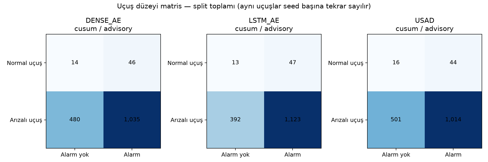
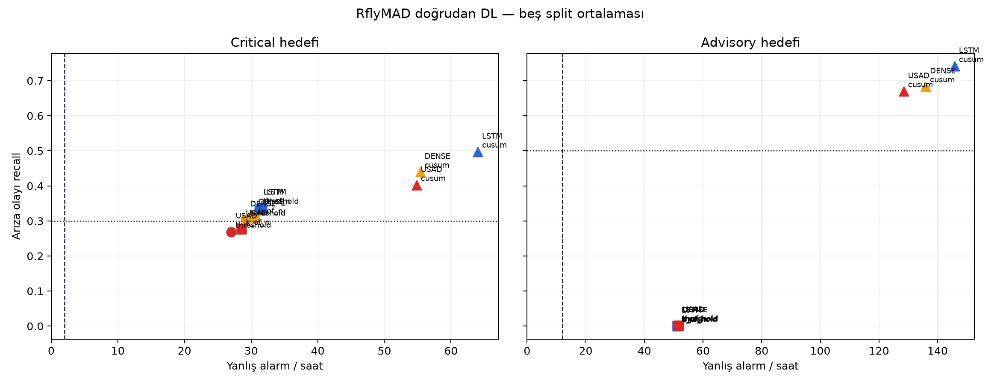
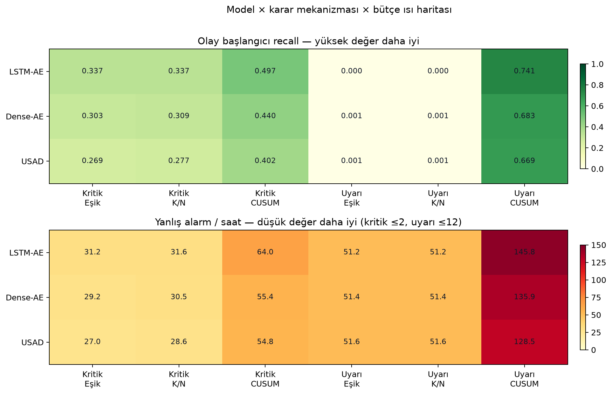
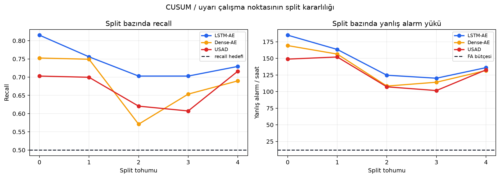
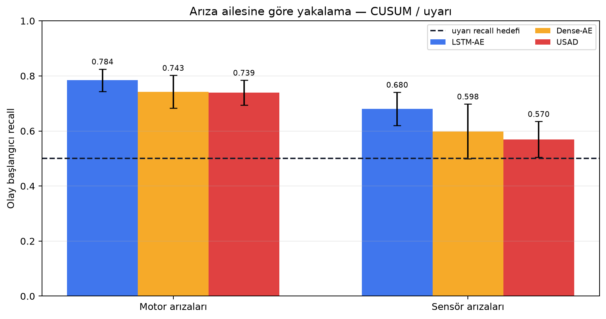
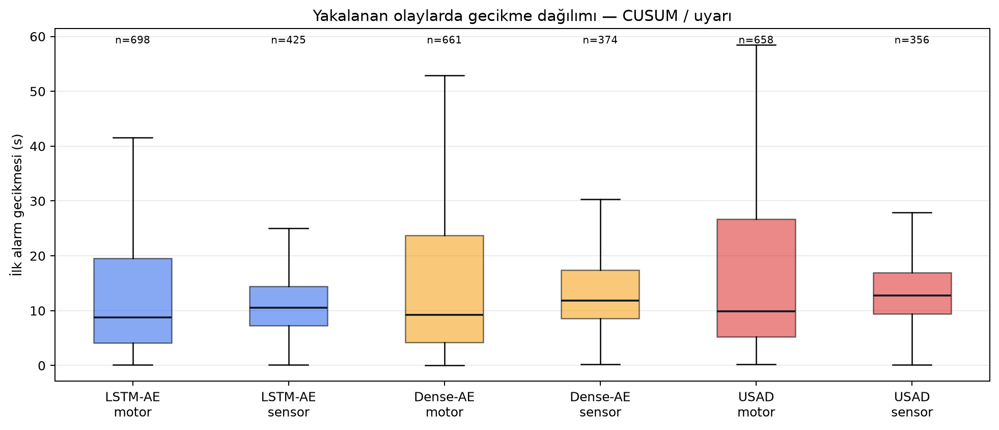
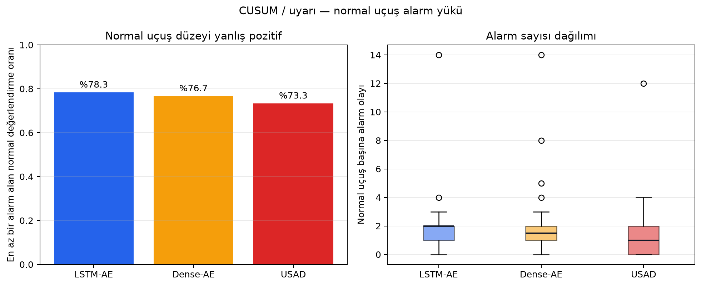
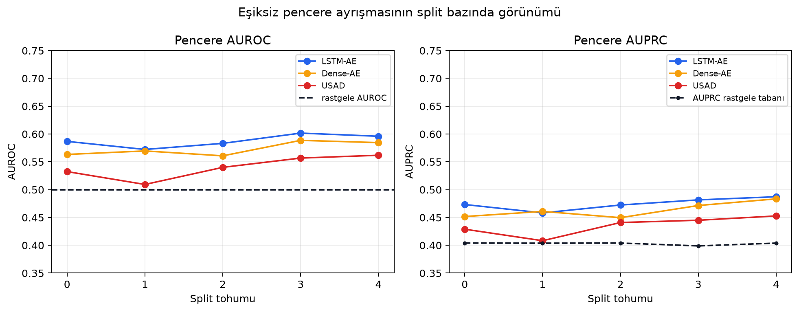

Projenin başından bugüne (arşivlenmiş fazlar dahil) her veri kümesi, her yöntem, her sonuç — gerçek sayılarla, tek bakışta. Uzun anlatım yok: tablolar, matrisler, dağılımlar. Sonuçlar deneyine göre keşif, geliştirme veya prova rolündedir; rolü belirtilmeyen sayı ürün kanıtı sayılmaz. SEAD, GNSS ve ADS-B son holdout'ları açılmadı. RflyMAD'in 132 uçuşluk tarihsel holdout'ı yeni DL runnerında dışarıda kaldı; ancak 20 Temmuz'daki toplu şema/sayım incelemesi nedeniyle bu yeni hat için “hiç okunmamış kör test” iddiası yapılmıyor.
Hiçbir yöntem–veri kombinasyonu, yeterli arıza yakalama oranını ve kabul edilebilir yanlış-alarm yükünü aynı anda sağlayamadı; en titiz iki son deneyde sinyalin varlığı istatistiksel olarak kanıtlandı ama güvenli alarm eşiği kuracak kadar arızasız uçuş verisi yoktu.
| Yöntem | ALFA sabit kanat | UAV Attack GPS saldırıları | UAV-SEAD geniş çok-rotor | RflyMAD gerçek arızalar | ADS-B 256M satır trafik | GNSS bütünlük RflyMAD gerçek uçuşlarında son kontrollü deney |
|---|---|---|---|---|---|---|
| Isolation Forest (tek model, satır) | 0,497 AUCrastgele✗ | 0,209 AUCtersine skor✗ | — | — | — | — |
| Isolation Forest (fizik modülleri) | 0,833 AUC±0,172 uçuş-ROC◐ | 0,600 AUC±0,212◐ | AUPRC 0,385referans model; hedef ✗✗ | 9 fizik modülü + IF-füzyon5 tohumda olay recall 0,000; aktarılmış füzyon sessiz kaldı✗ | elendiskor = ham genlik (ρ 0,996)✗ | — |
| LSTM Otokodlayıcı | 0,731 → 0,918 AUCveri büyütme sonrası — projenin en iyi tekil skoru✓ | spoof/jam ≈1,0DoS 0,53 (sensörde iz yok)◐ | recall 0,219genlik yanılsaması (ρ 0,964)✗ | 0,741 recall @ 145,81 FA/saCUSUM/uyarı; AUROC 0,588; ρ 0,933✗ | 0,568 AUCkuralın altında✗ | — |
| Dense Otokodlayıcı | 0,622 AUC✗ | ≈0,677LSTM ile birlikte◐ | recall 0,215aynı yanılsama✗ | 0,683 recall @ 135,94 FA/saCUSUM/uyarı; AUROC 0,573; ρ 0,943✗ | 0,572 AUC✗ | — |
| USAD (çekişmeli otokodlayıcı) | 0,450 AUC✗ | 0,531 AUC✗ | recall 0,217aynı yanılsama✗ | 0,669 recall @ 128,46 FA/saCUSUM/uyarı; AUROC 0,540; ρ 0,999✗ | eğitim çöktüloss ≈ 2,3×10¹⁰✗ | — |
| LightGBM (etiketli/denetimli) | AUPRC 0,843IF 0,858 & LSTM 0,872'nin altında✗ | — | AUPRC 0,349etiketsiz IF 0,385'i geçemedi✗ | — | — | — |
| Chronos (hazır tahmin modeli, sıfır-eğitim) | — | — | motor 0,205→0,390iyileşme ✓ · dikey 0,096→0,023 ✗ · birleşim 0,213 @ 23,9 FA/sa ✗◐ | — | — | — |
| Tek-özellik ince model (itki komutu) | — | — | recall 0,205→0,459kategori rekoru; ama tek başına 38,1 FA/sa◐ | itki komutu + CUSUM: 0,526 recall@ 22,3 FA/sa (bütçe ~2×)◐ | — | — |
| Kural-bazlı fizik skoru (öğrenmesiz) | — | — | — | — | AUROC 0,7653 sinir ağını geçti; ama 4,81 alarm/sa, uçuşların %89'u alarmlı◐ | — |
| Ardışık değişim tespiti (CUSUM) | IF+CUSUM: 0,625 recall @ 7,91 FA/satek geçen hücre — küçük havuz, kör testsiz◐ | — | — | — | konum kayması %49,7gevşek bütçede; sıkıda %7,1◐ | %70 @ 7,21 FA/sahedef %90'dı✗ |
| Bağlamsal LSTM (tahmin ağı) | — | — | — | — | genlik testini geçen tek ağ (ρ 0,65)ama sıkı bütçede 5 profilin 4'ünde recall <%6✗ | %100 @ 44,9 FA/saalarm yükü aşırı; gruplar arası kararsız✗ |
| Komut→tepki / residual-FDI | Ridge R1–R5 eğitilemeditek bağımsız oturum; doğrudan fiziksel R6 kalıntısı KS testini geçti◐ | — | — | Q2 motor R² 0,456Q1 0,011; Q3 0,000; Rfly S-3 satırları 4/4 ayrıştı◐ | — | — |
| Residual-FDI eşik kalibrasyonu | 0,169 / 2 saat11,8× normal maruziyet açığı✗ | — | — | 0,786 / 4 saat5,1× normal maruziyet açığı✗ | — | — |
Operasyonel hedef (önceden ilan edilmiş, sonuç görülmeden dondurulmuş): kritik ≥ 0,30 recall @ ≤ 2 FA/sa · uyarı ≥ 0,50 recall @ ≤ 12 FA/sa · ADS-B'de daha sıkı: 100 uçuş-saatinde 0,1–5 alarm.
RflyMAD boşluğu kapatıldı: 20 Temmuz'da LSTM-AE, Dense-AE ve USAD temiz bir rfly_dl hattında; 35 kanal, 50 örnek pencere, train-only RobustScaler + ±10 kırpma, normal-validation erken durdurma ve aynı threshold/K-of-N/CUSUM cetveliyle 5 split çalıştırıldı. Üçü de yüksek recall'a ancak 128–146 FA/sa alarm seliyle çıktı; 15/15 model-split genlik/rastgele-init denetiminde bayraklandı. Bu nedenle yeni sonuç, önceki “koşulmadı” eksikliğini kapattı fakat NO-GO hükmünü değiştirmedi.
Yalnız hem yakalama oranı hem saatlik yanlış alarm ölçülmüş konfigürasyonlar. Uyarı hedefi: recall ≥ %50 ve FA ≤ 12/sa (GNSS deneyinde recall hedefi %90'dı). Alt çubukta kesikli çizgi = 12 FA/sa bütçesi. Bir satırın "geçmesi" için üst çubuğun uzun, alt çubuğun çizginin solunda olması gerekir — bunu yalnız ilk satır başardı.
FA ekseni yeni Rfly DL alarm selini gösterebilmek için 0–150/sa aralığına ölçekli. ALFA satırının yıldızı da sınırlı: 10 normal uçuşluk küçük, tek-platform havuz; kazanç modelden değil karar katmanından; bağımsız kör testle hiç doğrulanmadı. ADS-B bağlamsal modeli bu tabloya giremiyor çünkü bütçesi başka birimde (100 uçuş-saatinde 0,1–5 alarm ≈ 0,001–0,05 FA/sa) — eşik bilinçli gevşetildiğinde %74–92 recall'a çıkıyor ama ~9 FA/sa üretiyor, yani kendi bütçesinin ~200 katı.
Kırmızı sınıflarda her "yakalama oranı" 1–4 uçuşa dayanır — istatistiksel genelleme yapılamaz.
Kümelenme sorunu: 398 normal uçuş yalnızca 64 bağımsız oturuma ait (geliştirme: 324 uçuş / 49 oturum; en kalabalık oturum 21 uçuş) — gerçek bağımsız örneklem uçuş sayısının çok altında.
Arızasız uçuş azlığı (51) sonradan eşik-kalibrasyonunun önündeki asıl duvar oldu — resmî kaynağın tamamı (84) bile açığı kapatamıyor.
itki_komutu skoru; threshold, K-of-N ve CUSUM kararları 5 tohumda çalıştırıldı. Füzyonlar 0 olay recall'da kaldı; en iyi hücre itki+CUSUM ile 0,526 recall / 22,28 FA/sa oldu.| Model ailesi | Girdi biçimi | Ölçekleme | Neyle eğitildi | Skor tanımı |
|---|---|---|---|---|
| Isolation Forest (modüler) | Özellikler fizik gruplarına bölündü (navigasyon / dinamik / aktüatör / veri kalitesi) | Grup başına ayrı; doğrulama-normaline göre normalize füzyon | Yalnız normal uçuşlar | Grupların birleşik aykırılık skoru; uçuş skoru = pencere maksimumu |
| Otokodlayıcılar (LSTM/Dense/USAD) | Kayan zaman pencereleri | RobustScaler — kırpmasız (genlik yanılsamasının kök nedeni çıktı) | Yalnız normal, uçuş-bazlı bölme, 5 tohum | Yeniden-üretim hatası |
| RflyMAD doğrudan DL | 35 hareket/tutum/kontrol/EKF/aktüatör/titreşim kanalı; 50 örnek pencere, 5 örnek stride, boşluk ≤2 s | Yalnız train-normal RobustScaler, NaN maske, ±10 kırpma | Split başına 27 normal train + 12 normal validation; 303 arızalı + 12 normal test; 5 split | Validation-CDF reconstruction skoru → threshold/K-of-N/CUSUM |
| ADS-B derin modeller | Pencere 12 adım, kaydırma 6, geçmiş 8; boşluk >60 sn pencere kesilir; 8 fizik-kalıntı kanalı | Yalnız eğitim-verisinden robust ölçek, ±5 kırpma | 60/638 parça, 15 epoch, yığın 512 | Yeniden-üretim / tahmin hatası |
| LightGBM | 10 sn'lik nedensel pencerelerden kanal başına ~20 istatistiksel tanımlayıcı | Sınıf-dengeli ağırlık | Etiketli pencereler; denetimli bölme, oturum izolasyonlu | Sınıf olasılığı |
| Chronos (hazır model) | Ham kanal serisi, sıfır-eğitim tahmin | — | Eğitilmedi (önceden eğitilmiş) | Tahmin − ölçüm farkı |
| Bağlamsal LSTM (ADS-B) | 12 geçmiş adım + uçuş fazı + yön sin/cos + gerçek Δt + veri-temposu + doluluk maskeleri = 19 girdi | Eğitim-normalinden robust | 2.929 uçuş / 1,27 M satır, 5 epoch | |ölçüm − tahmin| / tahmin-belirsizliği (skor genlikten arındırılmış) |
| Komut→tepki modeli (ridge) | Komut kanalları: gecikme pencereli özet (son değer + 3 üçgen pencere + 1 sn fark); bağlam kanalları: yalnız son değer — tepki geçmişi asla girmez (sızıntı koruması kodda) | Eğitim-normal medyan/MAD | Arıza başlangıcından ≥10 sn önceki satırlar; oturum-gruplu çapraz doğrulama (≥2 oturum şartı) | Ölçülen tepki − tahmin edilen tepki (kalıntı) |
| Veri kümesi | Bölme birimi | Tekrar (tohum) | Kör test | Not |
|---|---|---|---|---|
| ALFA | Uçuş | 5 | kapalı | Aynı uçuş asla hem eğitim hem testte değil; normalizasyon yalnız eğitim verisinden öğrenildi |
| UAV-SEAD | Oturum (tarih) | 5 | 200 uçuş — hiç açılmadı | Oturum-bazlı bölme tohum oynaklığını ±0,212'den ±0,012'ye indirdi; adil satır-ROC 0,474→0,799 (kazanç modelden değil, bölme disiplininden) |
| RflyMAD | Vaka kimliği (oturum) | 5 | 132 uçuş DL testinde dışarıda; körlük iddiası yok | Arıza aralığı gerçek zaman damgalarından; development'taki 4 çelişkili uçuş dışarıda. Yeni DL runnerı holdout satırı okumadı; daha önceki toplu portföy incelemesi nedeniyle “hiç açılmadı” denmiyor |
| ADS-B | Gün + dosya + uçuş rolü | — | kısmî | 3 gün fit / eşik / geliştirme / prova rollerine kilitli; tam kör aşamaya kriter geçilemediği için hiç gelinmedi. Sentetik veri asla eğitime/eşiğe girmez (kodda zorlanır) |
| GNSS deneyi | Uçuş rolleri (tablo D6) | — | 20 uçuş — mühürlü kaldı | Geliştirme VE prova birlikte geçilmeden kör test açılmaz kuralı uygulandı — açılmadı |
| Komut→tepki modeli | Oturum-gruplu CV | tohum 11 | kapalı | <2 oturumlu kanal eğitilmez (otomatik ret); eşik dosyası yazılamadan süreç güvenli durdu; ilk deneme eşikleri "KULLANMA" işaretli |
Çelişki değil: model sıralamada sinyal taşıyor (ROC 0,75) ama eşik yalnızca iki normal uçuştan seçilince aşırı sıkı çıktı — hiç yanlış alarm yok, ama 38 arızalı uçuşun 35'i kaçıyor. "Küçük normal havuz = kararsız eşik" probleminin ders kitabı örneği.
ALFA'nın tam tersi mod: eşik gevşek, arızalıların %53'ü yakalanıyor ama normal uçuşların da %41'i alarm alıyor. Normal ve arıza skorları gerçekten örtüşüyor — aynı eşikte iki hücreyi birden düzeltmek bu veriyle mümkün olmadı.
Yukarıdaki ikili (normal/arızalı) matrislerin arkasında hangi sınıfın daha çok kaçtığı gizleniyordu — burada açılıyor. Her satırın altında, o türü tek başına en çok ayıran 3 sütun ve tekil AUC'si var (küçük n'ler işaretli).
| Tür (n) | Alarm verildi | Sessiz kaldı |
|---|---|---|
| rudder (3) | 1 (%33) | 2 |
| aileron (7) | 1 (%14) | 6 |
| engine (25) | 1 (%4) | 24 |
| elevator (2) | 0 (%0) | 2 |
| aileron+rudder (1) | 0 (%0) | 1 |
| normal (4) | 0 yanlış alarm | 4 sessiz ✓ |
n=1–3 satırlarda (aileron+rudder, elevator, rudder) yüzdeler tek uçuşa dayanır — genelleme yok.
| Tür (n) | Alarm verildi | Sessiz kaldı |
|---|---|---|
| global konum (110) | 99 (%90) | 11 |
| dış konum (225) | 199 (%88) | 26 |
| mekanik (150) | 58 (%39) | 92 |
| irtifa (295) | 60 (%20) | 235 |
| normal (923) | 380 yanlış alarm (%41) | 543 sessiz ✓ |
İrtifa satırının en güçlü sütunu (baro kalıntısı, AUC 0,996) arızalı uçuşların yalnız %7'sinde dolu — yüksek AUC'ye rağmen ürün kanalı olamayan klasik tuzak (bkz. §04).
Öğrenmesiz kural-bazlı fizik skorunun beş bozulma tipindeki gerçek hücre sayıları (705.787 temiz + 705.787 bozuk satır/senaryo). Bu ölçüm, sonradan düzeltilen eski etiketle yapıldı — o etiketin AUC tavanı ~0,75 (yani buradaki AUC'ler tavana göre okunmalı).
Her modelin kendi temiz-veri yanlış-pozitif oranı (FPR) son satırda. Bir modelin TPR'ı kendi FPR'ına eşitse, model o bozulmayı hiç ayırt etmiyor demektir.
| Senaryo (TPR %) | Kural-bazlı | Dense-AE | LSTM-AE | LSTM-tahminci |
|---|---|---|---|---|
| Hız sapması | 65,9 | 59,9 | 62,0 | 42,9 |
| Yön donması | 60,2 | 23,3 | 24,1 | 26,6 |
| Dikey hız donması | 48,8 | 37,9 | 37,7 | 29,9 |
| Sinsi konum kayması | 38,6 | 22,5 | 24,4 | 26,1 |
| İrtifa kaybı | 35,4 | 19,7 | 20,6 | 25,9 |
| Temiz veride FPR (referans) | 36,1 | 22,1 | 24,0 | 26,1 |
RflyMAD'de 2×2 uçuş matrisi yerine olay başlangıcı recall'ı ve normal maruziyette alarm-olayı/saati kullanıldı. Aşağıdaki değerler gerçek arıza aralığı düzeltmesinden sonra, 5 tohum ortalamasıdır.
| Skor / karar | Hedef seviyesi | Olay recall | FA/sa | Okuma |
|---|---|---|---|---|
| 9 modüllü IF-füzyonları | kritik + uyarı | 0,000 | 0,000–0,065 | ✗ aşırı sessiz |
| İtki komutu + threshold | kritik | 0,406 | 17,28 | ✗ FA |
| İtki komutu + K-of-N | kritik | 0,394 | 14,09 | ✗ FA |
| İtki komutu + CUSUM | kritik | 0,442 | 9,23 | ✗ kritik bütçe 2/sa |
| İtki komutu + threshold | uyarı | 0,461 | 28,74 | ✗ iki hedef de kaçtı |
| İtki komutu + K-of-N | uyarı | 0,451 | 30,14 | ✗ iki hedef de kaçtı |
| İtki komutu + CUSUM | uyarı | 0,526 | 22,28 | ◐ recall geçti, FA geçmedi |
Aşağıdaki sayılar 5 split ortalamasıdır. Her split 27 normal eğitim, 12 normal validation ve 303 gerçek-arızalı + 12 normal test uçuşu kullandı. Model, scaler ve eşik split içinde yeniden fit edildi; test hiçbir fit işlemine girmedi.
| Model / karar | Hedef | Olay recall | FA/sa | Motor recall | Sensör recall | Sonuç |
|---|---|---|---|---|---|---|
| LSTM-AE + threshold | kritik | 0,337 | 31,21 | — | — | ✗ FA 15,6× |
| LSTM-AE + K-of-N | kritik | 0,337 | 31,60 | — | — | ✗ FA 15,8× |
| LSTM-AE + CUSUM | kritik | 0,497 | 64,02 | — | — | ✗ FA 32,0× |
| LSTM-AE + CUSUM | uyarı | 0,741 | 145,81 | 0,784 | 0,680 | ✗ FA 12,2× |
| Dense-AE + CUSUM | uyarı | 0,683 | 135,94 | 0,743 | 0,598 | ✗ FA 11,3× |
| USAD + CUSUM | uyarı | 0,669 | 128,46 | 0,739 | 0,570 | ✗ FA 10,7× |

Beş split toplamı; aynı uçuş her seed'de yeniden değerlendirildiği için pozitif payda 303×5=1.515, normal payda 12×5=60'tır. LSTM: TP 1.123 / FN 392 / FP 47 / TN 13; Dense: 1.035 / 480 / 46 / 14; USAD: 1.014 / 501 / 44 / 16.

Validation'da 2/12 FA-saat bütçesine fit edilen eşikler testte taşınmadı. Hiçbir model × karar × bütçe satırı iki şartı birlikte sağlamadı.

18 çalışma noktası tek cetvelde: eşik/K-of-N/CUSUM ile kritik/uyarı birlikte görülüyor. Recall yükselen hücrelerin tamamında yanlış alarm da bütçenin çok üstüne çıkıyor.

CUSUM/uyarı çizgileri her split'te recall hedefinin üstüne yaklaşabiliyor; fakat 12 FA/sa çizgisinin hiçbir split'te yanına dahi gelemiyor. Sorun tek bir kötü tohum değil.

Motor arızaları her üç modelde daha görünür: LSTM 0,784 / 0,680; Dense 0,743 / 0,598; USAD 0,739 / 0,570 motor/sensör recall. Hata çubukları split standart sapmasıdır.

Kutu grafik yalnız yakalanan olayları içerir; kaçırılan olayları görünmez kılar. Bu yüzden düşük medyan gecikme tek başına başarı değildir ve recall ile birlikte okunmalıdır.

Normal test-değerlendirmelerinin LSTM'de %78,3'ü, Dense'de %76,7'si, USAD'da %73,3'ü en az bir alarm aldı. Uçuş düzeyindeki operasyonel yük böylece doğrudan görünür.

AUROC çizgileri 0,5 çevresinde, AUPRC çizgileri %40,3 prevalans tabanına yakın. Yüksek event recall'ın güçlü skor ayrışmasından gelmediğini destekliyor.
Olaylar ve normal uçuşlar farklı birimler olduğu için tek 2×2'ye zorlanmadı: sol iki sütun gerçek arıza olaylarını (geliştirmede 17, provada 10 olay), sağ sütun aynı eşiğin normal uçuşlardaki alarm yükünü gösterir.
| Grup · yöntem (uyarı sözleşmesi) | Yakalanan olay (TP) | Kaçan olay (FN) | Normal uçuşta FA/sa | Sonuç |
|---|---|---|---|---|
| Geliştirme · otopilot göstergeleri | 10 | 7 | 19,58 | ✗ |
| Geliştirme · CUSUM | 9 | 8 | 0,00 | ✗ recall düşük |
| Geliştirme · bağlamsal LSTM | 14 | 3 | 101,60 | ✗ alarm seli |
| Prova · otopilot göstergeleri | 9 | 1 | 28,86 | ✗ |
| Prova · CUSUM | 7 | 3 | 7,21 | ✗ hedef %90'dı |
| Prova · bağlamsal LSTM | 10 | 0 | 44,86 | ✗ alarm yükü |
Kritik sözleşmede (5 sn içinde tespit) tablo daha da sert: CUSUM her iki grupta 0/17 ve 0/10 yakaladı (sonlu eşik bile bulunamadı); LSTM provada 9/10 yakalayıp geliştirmede 8/17'ye düştü — gruplar arası kararsızlık deneyin ret gerekçelerinden biri.
Her modelin skoru, hiç eğitilmemiş rastgele bir ağın ve/veya ham sinyal büyüklüğünün skoruyla karşılaştırıldı. Önceden ilan edilen 0,80 sınırının üzeri "genlik baskınlığı" olarak işaretlendi. Sınırın altında kalmak yalnız bu belirli hata modunun görülmediğini söyler; tek başına anomali öğrenildiğini veya tespit başarısını kanıtlamaz.
Kapanış bulgusu: SEAD'de genlik bağımlılığı skor katmanında giderilince (bağıl hata, ρ 0,96→0,15–0,55) yakalama oranı <0,06'ya düştü. Yeni Rfly turunda ±10 kırpma uygulanmasına rağmen eğitilmiş skorun rastgele-init/genlik korelasyonu model ortalamasında LSTM 0,933, Dense 0,943, USAD 0,999 oldu ve 15/15 split bayraklandı. Yani kırpma tek başına kestirme öğrenmeyi çözmedi.
Anomali sırasında otopilot kestirimcisi ölçümü reddediyor → reddedilen ölçüm sapma üretmiyor → arıza "temiz" görünüyor. Yalnız-EKF modülü satır-ROC 0,354 (rastgeleden kötü, yön ters). Modül füzyondan bilinçli çıkarıldı.
Sinyal-kalitesi modülü UAV Attack'ta sistematik ters (ROC 0,292): simülasyon kayıtlarında GPS sağlık alanları sabit-sıfır, canlı kayıtlarda gerçek gürültü var — canlı normal uçuş, simülasyon saldırısından daha "anormal" skorlanıyor.
2 m/s'lik sinsi GPS kayması tek-satır skorunda görünmedi; 2→20 m/s taraması için preflight hazırlandı ancak tam deney çalıştırılmadı. Bu nedenle sonuç yalnız ölçülen 2 m/s profili ve daha sonra kurulan birikimli CUSUM koşulları için geçerlidir; tüm şiddetlere genellenemez.
Keşif analizi (model seçimi değil): her sütun tek başına bir sınıflandırıcı gibi puanlandı. Yüksek AUC her zaman kullanılabilir demek değil — doluluk ve örnek sayısı sütunlarına bak.
| Veri · arıza sınıfı | En ayırıcı sütun | Tekil AUC | Arızalıda doluluk | Uyarı |
|---|---|---|---|---|
| ALFA · kanatçık | |hava hızı hatası| | 0,943 | %100 | uçuş profiliyle karışabilir |
| ALFA · irtifa dümeni | |hava hızı hatası| | 0,947 | %100 | sınıfta yalnız 2 uçuş var |
| ALFA · motor | yol-noktası mesafesi | 0,913 | %70 | arıza fiziğini değil, arıza sonrası eve-dönüş rotasını yakalıyor olabilir |
| ALFA · dümen | yatış spektral enerjisi (5 sn) | 0,915 | %99 | n=4 uçuş — keşif sonucu |
| UAV Attack · sinyal karıştırma | dikey konum belirsizliği (EPV) | 1,000 | %100 | n=1 kayıt; kolay kalite imzası olabilir |
| UAV Attack · GPS aldatma | GPS sağlık verisi eksikliği | 0,648 | %100 | zayıf — sinsi kayma normal varyasyonla örtüşüyor |
| UAV Attack · hizmet engelleme | tutum verisi eksikliği | 0,680 | %100 | dolaylı imza; 6 kaydın 4'ünde hiç iz yok |
| SEAD · aktüatör (motor) | itki komutu | 0,996 | %100 | 16 sütunlu modülde seyreliyordu → tek-özellik modeli bu bulgudan doğdu |
| SEAD · konum X | GPS hız tutarlılık kalıntısı | 0,890 | %79 | fiziksel olarak açıklanabilir, sağlam |
| SEAD · konum Z (irtifa) | barometre kalıntısı (5 sn maks) | 0,996 | ≈%0 | tuzak: muhteşem AUC, ama sütun arızalı uçuşların neredeyse hiçbirinde dolu değil — ürün kanalı olamaz |
| SEAD · hız | konum test-oranı (5 sn ort.) | 0,997 | %100 | sınıfta yalnız 2 olay — genelleme yok |
UAV Attack'ta 49 sütunun 103 çifti neredeyse kopya — "daha çok sütun = daha çok bilgi" varsayımının çöktüğü yer. Tam-kopya (ρ=1,000) örnekler: konumdan hesaplanan hız ↔ kayıttaki GPS hızı; yerel-XY sıfırlama sayacı ↔ hız sıfırlama sayacı; ham EPh ↔ EPv.
| Veri | Nokta | Uçuş | Sütun | PCA-2 varyans |
|---|---|---|---|---|
| ALFA | 10.262 | 53 | 85 | %21,9 |
| UAV Attack | 3.800 | 19 | 49 | %60,2 |
| UAV-SEAD | 30.000 | 480 | 133 | %40,0 |
Kritik bulgu SEAD'de: t-SNE adaları normal/arıza etiketini değil oturum/görev ailesini izliyor — yani bir model en kolay öğreneceği şeyi (hangi oturum?) öğrenip "arıza tespiti" gibi raporlayabilir. Oturum-bazlı bölme disiplininin asıl gerekçesi bu görüntü.
Yakalama oranı.
Ne yapıldı: "klasörü arızalıysa uçuşun tamamı arızalı" varsayımı terk edildi. Uçuş kaydındaki rfly_ctrl_lxl kontrol mesajından arıza komutunun fiilen aktif olduğu başlangıç–bitiş aralığı çıkarıldı: 439 arızalı uçuşun 434'ünde aralık bulundu. Klasör etiketi "motor arızası" dediği hâlde kontrol mesajında hiç aktif arıza görünmeyen 5 uçuş, sonuç görülmeden belirsiz/geçersiz olarak dışlandı; yerelde bulunmayan deney föyüyle aralık uydurulmadı.
Ne yapıldı: "tespit" tanımı değiştirildi — yalnız arıza başlangıcından sonra açılan yeni alarm sayılır. Eski ölçüm, olaydan önce zaten açık olan bir alarmın arıza aralığına taşmasını da başarı sayıyordu; bu, literatürdeki "point-adjust" şişirmesinin birebir karşılığıydı.
AUC. "En güçlü sinyal" sanılan kanal, yalnız geçmişe bakan hesapla sıradanlaştı; gerçek en güçlü tekil sinyal rota-sapması (0,751) çıktı.
Ne yapıldı: birikimli skorun merkez/eşik parametrelerinin tüm seriden (yani gelecekten) etkilenmesi engellendi — taban çizgisi yalnız eğitim-normal verisinden dondurulur oldu, hesap yalnız geçmişe bakar hâle getirildi ve "serinin başını kessen sonuç değişmemeli" (önek-değişmezlik) testi zorunlu kılındı.
Ne yapıldı: tek "anomali" kolonu üç ayrı kolona bölündü — (1) enjeksiyon kodu o anda aktif mi, (2) modelin gördüğü gözlemde gerçekten değişim oluştu mu, (3) satır değerlendirmeye uygun mu. Skorlama yalnız gözlemlenebilir satırlarda yapıldı (örnek: 666.739 aktif kesinti satırının yalnız 570.666'sı gözlemlenebilirdi). Eski etiket, mükemmel dedektörün bile geçemeyeceği yapay bir ~0,75 AUC tavanı koyuyordu; ayrım gelince tavan kalktı.
| Hat | Bulunan problem | Uygulanan düzeltme | Ölçülen etkisi |
|---|---|---|---|
| ALFA | Hız kolonu ad eşleme hatası nedeniyle %100 boştu | nav_info-velocity alanları gerçek meas_x/des_x isimlerine eşlendi | Boşluk %100 → %9,3; hız ve dönüş kalıntıları yeniden kullanılabilir oldu |
| UAV Attack | Dosya adı regex'i topic'i yanlış bölüyor, Ping-DoS satırları etiketsiz kalıyordu | Bilinen topic adlarına tam eşleşme ve yol tabanlı ping/dos etiketi eklendi | 19 kayıt doğru kaynak/etiketle yeniden kuruldu; DoS'un 4/6 kayıtta fiziksel izi olmadığı ayrıştırıldı |
| UAV-SEAD | Aynı oturumdaki uçuşlar farklı bölmelere düşerek görev/oturum bilgisini sızdırıyordu | Uçuş yerine tarih/oturum bazlı grup bölmesi uygulandı | Tohum oynaklığı ±0,212 → ±0,012; 0,474→0,799 değişimi model kazancı değil daha adil bölme olarak kaydedildi |
| RflyMAD | Bir kaynakta hiç olmayan kolon, başka kaynak medyanıyla dolduruluyordu | Kaynak-özel kolon maskesi getirildi; yapısal olarak olmayan kanal füzyona sokulmadı | "Hayalet sensör" sinyali ve kaynak kimliği sızıntısı kapatıldı |
| ADS-B | MAD=0 kanala epsilon vermek kuantize irtifa kanalını saç tetiğe çevirdi | MAD tam sıfır olan kanallar floor'lanmak yerine manifestle dışlandı | Normal pencerelerin %93,8'ine ceza yazan yapay kanal kaldırıldı |
| Tüm zamansal hatlar | Boşluk üzerinden pencere kurma ve ileri bilgi kullanma riski | Gap sınırı, geçmişe-bakan birleştirme, train-only ölçekleme ve önek-değişmezlik testleri uygulandı | Gelecek sızıntılı ALFA sonucu 0,878 → nedensel 0,611 olarak dürüstçe revize edildi |
| Yöntem (uyarı hedefi: ≥%90 @ ≤12 FA/sa) | Yakalama | FA/sa |
|---|---|---|
| Otopilot göstergeleri | %90,0 | 28,86 |
| Ardışık değişim (CUSUM) | %70,0 | 7,21 |
| Bağlamsal LSTM | %100,0 | 44,86 |
| Kanal (öğrenilen ilişki) | CV R² | Durum |
|---|---|---|
| Motor güç dağılımı | 0,456 | ✓ güçlü |
| Tutum komut-tepkisi | 0,011 | zayıf |
| Toplam güç → dikey ivme | 0,000 | sinyalsiz |
SEAD'de birden fazla arıza sınıfı taşıyan 8 uçuş tek-sınıf değerlendirmesine sokulmadı. Bunlar mekanik sayacına doğrudan eklenemez; çok-etiketli hedef ve ayrı metrik sözleşmesi gerektirir. Bu kapsam çalışılmadı.
Akım alanı çoğunlukla −1 "bilinmiyor" değeri; mevcut kolonla batarya-sağlığı modeli savunulamaz. Önce ayrı veri-kalitesi/ölçüm kapsamı çalışması ve gerçek akım telemetrisi gerekir.
ALFA'daki 0,625 recall @ 7,91 FA/sa sonucu modelin değil, skorun üzerine oturan karar katmanının (birikimli eşik + önyükleme) başarısı. Raporlarda bu ayrım karıştırılmamalı.
Değişintisi sıfır olan kanala küçük epsilon verilince normal pencerelerin %93,8'i pozitif skor aldı — kanal tamamen dışlanınca düzeldi. Eğitim penceresi sıfır-oranı artık raporlanıyor (0,31).
MOMENT modeli bu makinede (Python 3.14) bağımlılık çakışması yüzünden hiç kurulamadı; Chronos kuruldu ve denendi. Yani "foundation model denenmedi" değil, "biri denendi, biri kurulamadı".
ADS-B'de 1.800 sn boşluk kuralıyla üretilen uçuş sınırlarının sağlayıcının kendi "yeni bacak" bayrağıyla uyumu yalnız %60,4 — uçuş sınırı tek başına kesin doğruluk kaynağı değil.
Mevcut veri, etiket kalitesi ve sensör kapsamıyla genel amaçlı, platformlar-arası, düşük yanlış-alarmlı bir anomali tespit ürünü doğrulanamadı. Kanıt üç bağımsız hattan geliyor: (1) bu kapsamda değerlendirilen başlıca istatistiksel, fiziksel, klasik ML ve derin öğrenme ailelerinin hiçbiri aynı dondurulmuş eşikte hedefi geçmedi; (2) ölçülen kök nedenler veri kapsamı, etiket doğruluğu, oturum bağımsızlığı ve kalibrasyon maruziyetinde toplandı; (3) veri büyütme, özellik mühendisliği, denetimli öğrenme, hazır model, mimari ve kalibrasyon kolları makası kapatmadı. Bu hüküm "hiçbir yöntem gelecekte çalışamaz" değil, mevcut kanıtla ürün fizibilitesi gösterilemedi hükmüdür.
Bu bağlantılar HTML repo içinden açıldığında çalışır. Dosya tek başına başka bir sisteme yüklenirse yollar metin olarak yine hangi artefaktın denetlenmesi gerektiğini gösterir.
| Konu | Birincil kanıt | Ne doğrular? |
|---|---|---|
| ALFA / Attack / SEAD görsel sayımları | viz/alfa/viz_manifest.jsonviz/uav_attack/viz_manifest.jsonviz/uav_sead/viz_manifest.json | Confusion matrix, sınıf/oturum sayımı, PCA ve tek-özellik bulguları |
| Tek-özellik ve korelasyon tabloları | alfa/feature_auc_matrix.csvuav_attack/feature_auc_matrix.csvuav_sead/feature_auc_matrix.csv | Feature AUC, örnek sayısı ve doluluk oranı |
| RflyMAD gerçek aralık sonucu | rfly1/interval_truth_report.jsonofficial_full_interval_excluding_invalid/summary.json | 434 aralık, 5 belirsiz uçuş; threshold/K-of-N/CUSUM 5-tohum ortalamaları |
| RflyMAD doğrudan DL | rfly_dl/summary.jsonsummary_table.csvwindow_diagnostics.csvön-kayıt planı | LSTM/Dense/USAD 5-split recall–FA sonuçları, AUROC/AUPRC ve 15/15 genlik denetimi |
| ADS-B eski ve düzeltilmiş truth | rule_scorer_report.jsonstep3_corrected_rule_v1/summary.jsontruth_v2_eval_report.json | Confusion hücreleri, truth-v2 AUROC/AUPRC ve olay recall'ları |
| GNSS geliştirme / prova | development_result.jsonrehearsal_result.json | TP/FN, normal alarm yükü ve 12/12 NO-GO |
| Residual-FDI | phase_e_handout/SUMMARY_FOR_CLAUDE.jsonRESIDUAL_V1_KALIBRASYON_NOGO_RAPORU.md | R², S-4/S-1/S-3 kapıları ve 11,8× / 5,1× kalibrasyon açığı |